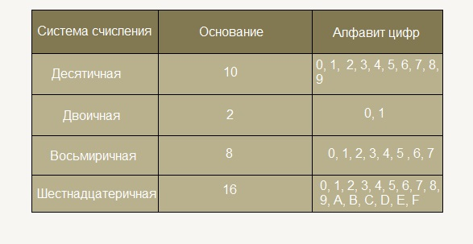
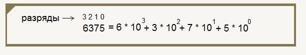

Алфавит СС
Алфавит СС - это набор символов(цифр) для обозначения числа. Он обозначается английской N.
Например, в десятичной СС алфавит состоит из цифр от 0 до 9.

Развёрнутая форма записи числа
Развёрнутая форма записи числа - это запись числа в виде суммы разрадов.
Общая формула:
am-1 am-2 am-3 ... a2 a1 a0
=
am-1 * nm-1 + am-2 * nm-2 ... a2 + n2 + a1 + n 1
где am, am-1, ... - цифры числа, n - основание СС, m - колличество разрядов числа.
Значение каждой цифры умножается на основание системы счисления в степени, равной разряду этой цифры, полученные величины складываются:

Аналогично и для двоичной СС.
Перевод из десятичной СС в двоичную столбиком
Перевёдем число 35.
Для этого нам нужно разделить это число на два, а остаток записать. Дальше таким же образом разделить результат и т. д.

Перепишем остаток с конца
Результат: 1000112
Правила быстрого перевода
Правила быстрого перевода допустимо использовать тогда, когда планируется осуществить перевод внутри родственных СС. Родственные СС - это СС которые можно представить в виде степени одного числа. Для этого удобно использовать триады и тетрады.
Таблица триад и тетрад
| 10 СС |
2 СС |
8 СС |
16 СС |
| Число |
Триада |
Число |
Тетрада |
| 1 |
1 |
1 |
001 |
1 |
0001 |
| 2 |
10 |
2 |
010 |
2 |
0010 |
| 3 |
11 |
3 |
011 |
3 |
0011 |
| 4 |
100 |
4 |
100 |
4 |
0100 |
| 5 |
101 |
5 |
101 |
5 |
0101 |
| 6 |
110 |
6 |
110 |
6 |
0110 |
| 7 |
111 |
7 |
111 |
7 |
0111 |
| 8 |
1000 |
10 |
001 000 |
8 |
1000 |
| 9 |
1001 |
11 |
001 001 |
9 |
1001 |
| 10 |
1010 |
12 |
001 010 |
A |
1010 |
| 11 |
1011 |
13 |
001 011 |
B |
1011 |
| 12 |
1100 |
14 |
001 100 |
C |
1100 |
| 13 |
1101 |
15 |
001 101 |
D |
1101 |
| 14 |
1110 |
16 |
001 110 |
E |
1110 |
| 15 |
1111 |
17 |
001 111 |
F |
1111 |
| 16 |
10000 |
20 |
010 000 |
10 |
0001 0000 |
Для перевода восьмиричного числа в двоичное можно каждую цифру этого числа заменить двоичной триадой по таблице.
Перевод двоичного числа в восьмиричное:
- 1. Разделить целую часть числа на триады справа налево
- 2. Недостающие до триады позиции заполнить незначащими нулями
- 3. Заменить каждую триаду двоичных чисел соответствующей восьмиричной цифрой по таблице
Также можно сделать и с шестнацатиричной СС, только выделять тетрадами.